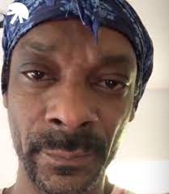

Calvin Cordozar Broadus Jr. (Long Beach, California; 20 de octubre de 1971), conocido artísticamente como Snoop Dogg, y en raras ocasiones como Snoop Lion, es un rapero, empresario, productor y actor estadounidense. Es uno de los artistas de hip-hop con más éxito en el Gangsta rap. Además, es uno de los más notables amigos del productor Dr. Dre. Fue miembro de la banda Crips cuando estudiaba en el instituto. Algún tiempo después de su graduación, fue arrestado por posesión de cocaína. Su carrera musical comenzó en 1992 después de ser puesto en libertad, cuando fue descubierto por Dr. Dre, con quien colaboró en temas de su disco debut en solitario The Chronic, y en la canción principal de la banda sonora del videoclip Deep Cover.
Biografía

Snoop Dogg fue al instituto de Long Beach Polytechnic High School y su incursión inicial en la vida pública fue debido a su participación en tráficos de drogas, aunque a una escala relativamente pequeña. Snoop fue miembro de la banda local Rollin' 20 Crips. Sin embargo Snoop fue presionado para integrarse en el mundo de la música y dejar a un lado las ventas de drogas en las calles. Posteriormente, Snoop grabó unas cintas caseras con su primo Nate Dogg y su amigo Warren G (hermanastro de Dr. Dre que en esos tiempos trabajaba para N.W.A.). En un principio, Lil' 1/2 Dead, primo de Nate, y por lo tal de Snoop, formaba también parte del grupo llamado 213, nombrado así debido a que ese era el por entonces prefijo local de Long Beach. Esto era en parte en homenaje al grupo 413 de Richie Rich, conocido así por el por entonces también prefijo local de Oakland, California.